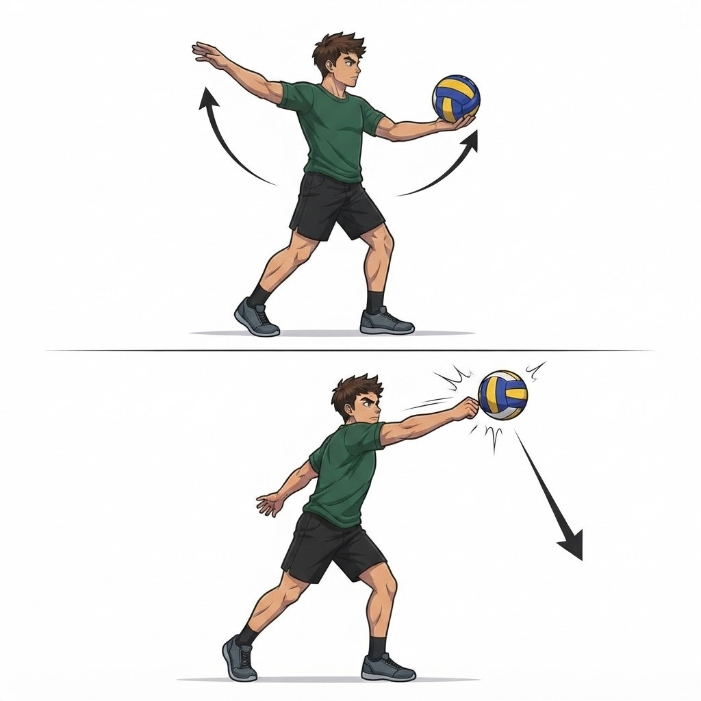
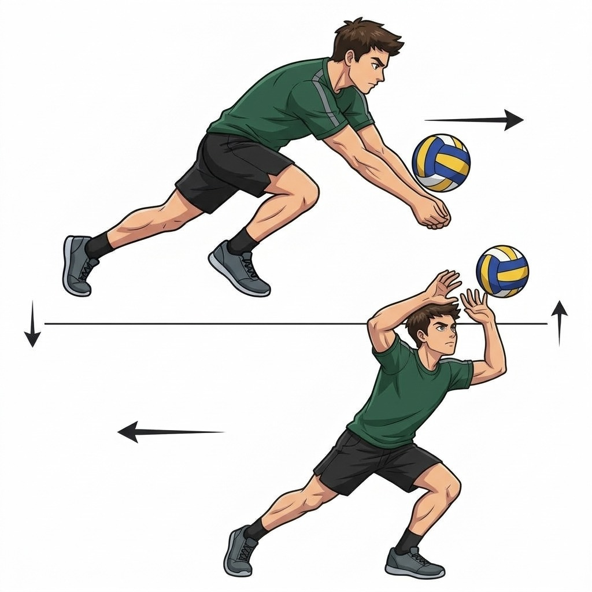
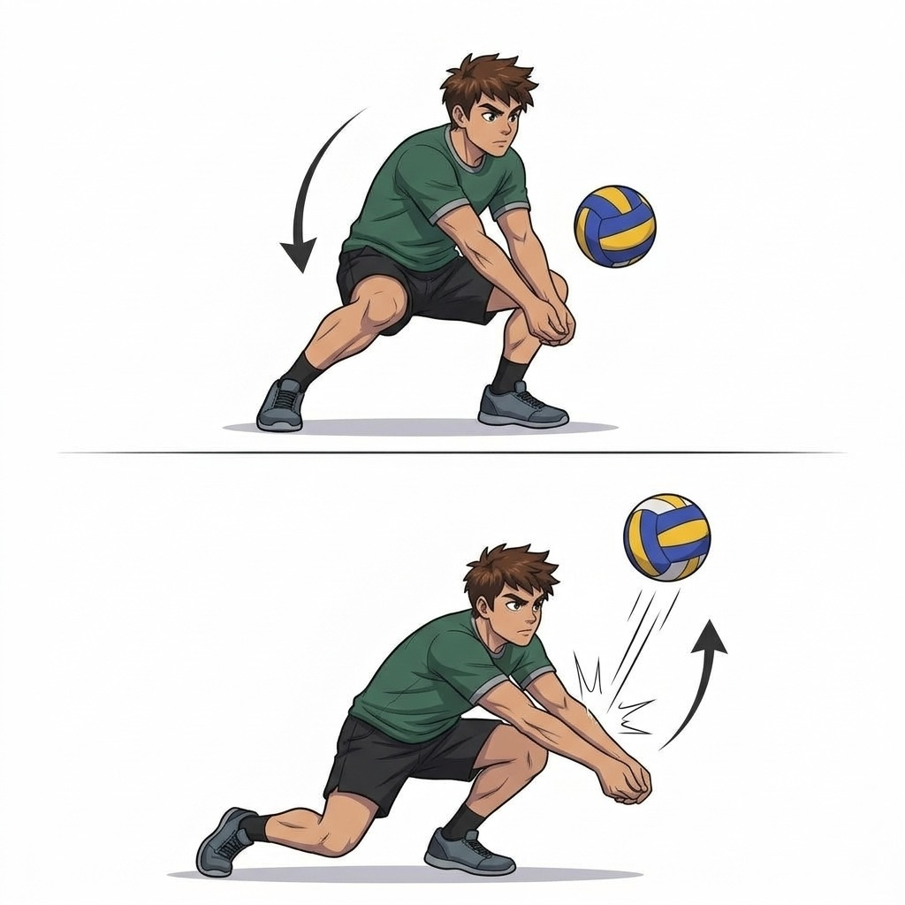
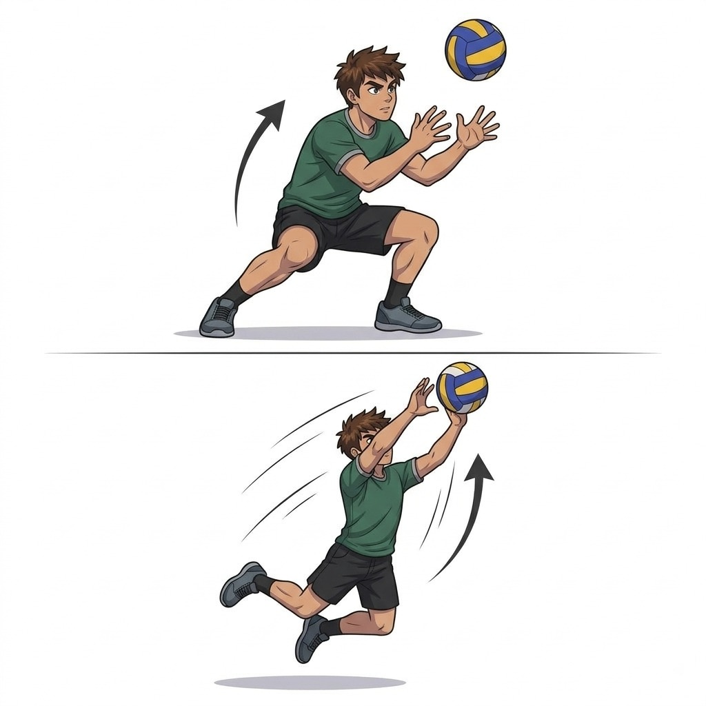
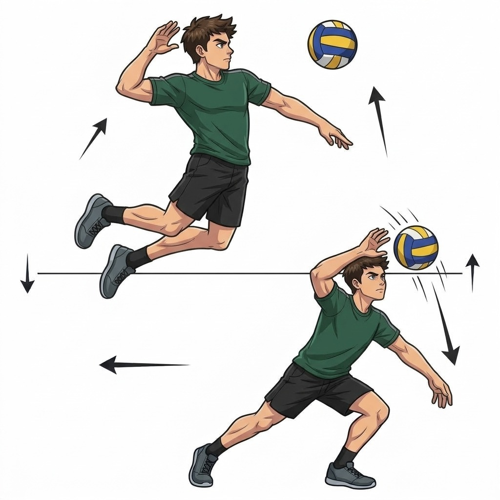
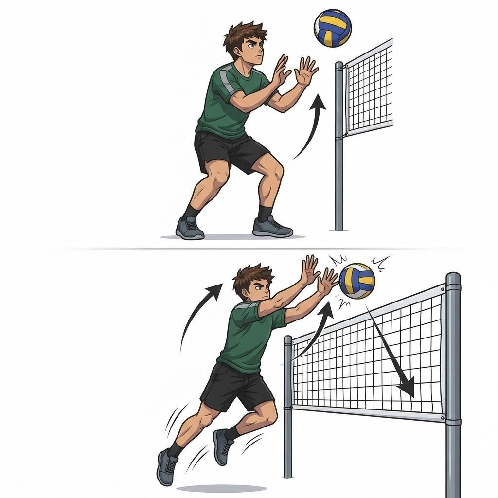

Teknik Dasar Voli
-
Servis

Penjelasan: Pukulan pertama dari area belakang garis lapangan untuk memulai permainan sekaligus mengarahkan bola ke area lawan.
-
Passing

Penjelasan: Teknik mengoper atau menerima bola (bisa menggunakan lengan bawah untuk passing bawah atau jari-jari tangan untuk passing atas) agar bola tetap terjaga di udara dan diarahkan ke rekan setim.
-
Drigging

Penjelasan: Teknik penyelamatan bola rendah secara cepat dan sigap untuk menahan serangan keras (smash) lawan agar bola tidak menyentuh lantai.
-
Setting

Penjelasan: Teknik mengumpan bola (umumnya menggunakan passing atas oleh pemain tosser/setter) secara terukur ke dekat net agar siap dipukul oleh rekan setim.
-
Smash

Penjelasan: Pukulan serangan yang dilakukan sambil melompat tinggi untuk menghantam bola secara keras dan menukik tajam ke area lapangan lawan guna mencetak poin.
-
Blocking

Penjelasan: Teknik bertahan di dekat net dengan cara melompat dan menjulurkan kedua tangan lurus ke atas untuk membendung serangan smash dari lawan.